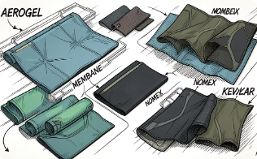
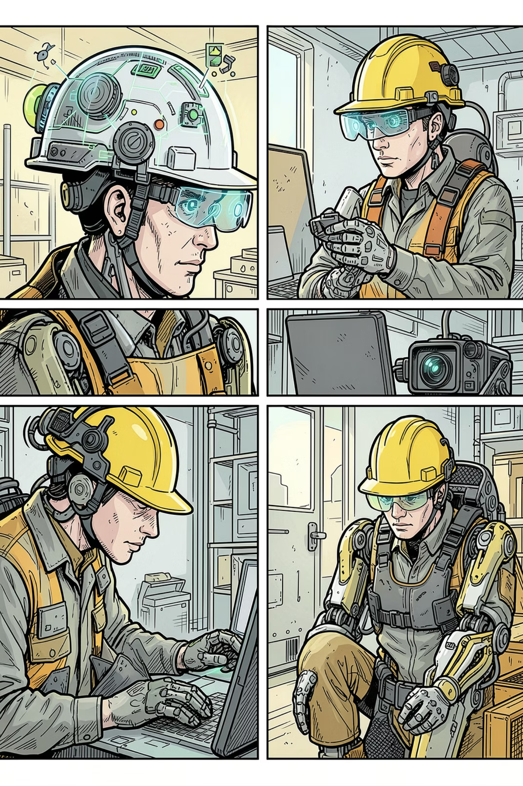
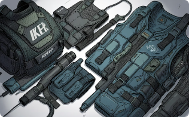
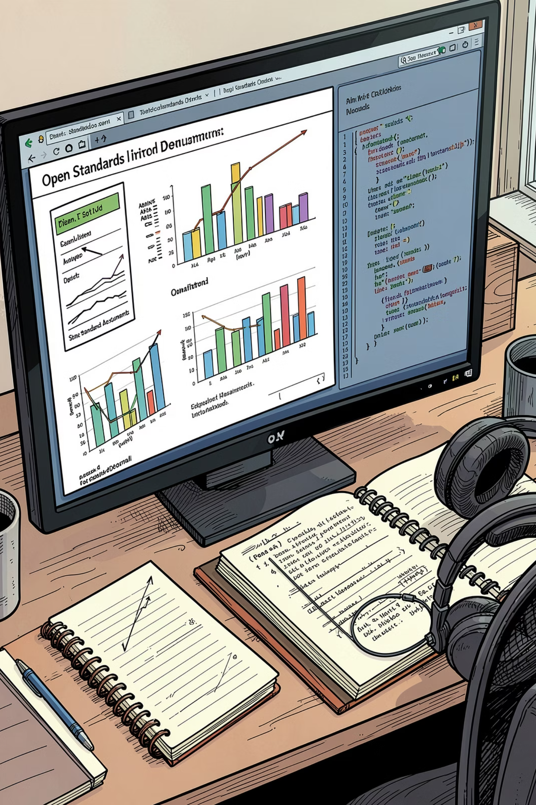
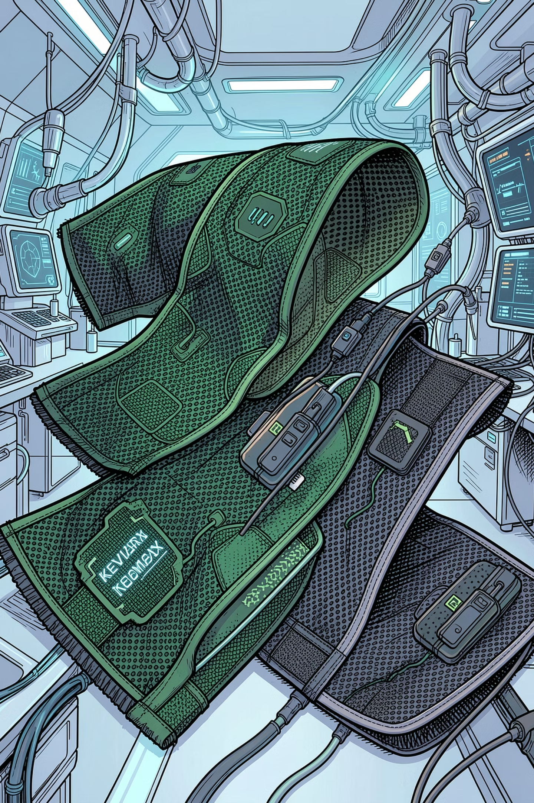

Kevlar / Twaron
Арамидные волокна с высокой прочностью на разрыв и устойчивостью к порезам.
Материалы, датчики и алгоритмы превращают экипировку из пассивного барьера в активную систему безопасности.
Высокотехнологичные волокна и ткани повышают прочность, огнестойкость и комфорт.
Арамидные волокна с высокой прочностью на разрыв и устойчивостью к порезам.
Не поддерживают горение и не плавятся; применяются в экипировке пожарных и сварщиков.
Сочетают комфорт натуральных волокон с прочностью и износостойкостью синтетики.
Специальная структура препятствует распространению разрыва.
Не пропускают капли воды снаружи и выпускают пар изнутри.
Многофункциональные материалы со встроенными датчиками и защитными пропитками.

Каски нового поколения могут объединять GPS/ГЛОНАСС, гироскоп, акселерометр, камеры и датчики.
Отслеживание местоположения работника в реальном времени.
Фиксация удара или падения и автоматическая отправка сигнала тревоги.
Контроль нахождения каски на голове в опасной зоне.

Браслеты и жилеты со встроенными датчиками следят за пульсом, температурой тела, уровнем кислорода в крови и ЭКГ. При критическом отклонении система сообщает оператору местоположение работника.



Промышленные экзоскелеты компенсируют или перераспределяют нагрузку на опорно-двигательный аппарат. В материалах проекта указано снижение нагрузки на позвоночник на 30–80%.
На Электрохимическом заводе в Зеленогорске устройства массой 4,1 кг помогают безопасно переносить грузы до 50 кг.
ГОСТ Р 12.4.306-2023 С 2023 года промышленные экзоскелеты классифицируются как СИЗ.
Камеры с программным обеспечением фиксируют отсутствие каски, перчаток или спецодежды и нахождение человека в опасной зоне.